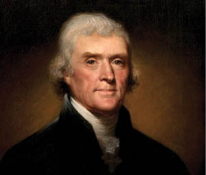

George Washington’un ardından John Adams o günlerde yeni bir devlet olan Amerika Birleşik Devletleri’nin ikinci başkanı olmuştu. Yeni başkanın “gelenek görenek” konusunda pek bilgili olmadığına kanaat getiren Trablusgarp Dayısı Yusuf Paşa 1799 yılında dostunu uyarmayı uygun bulur. Yusuf Paşa, “Ölen yüksek makam sahibi adına o makama gelen yeni başkanın Trablus Krallığı’na bir hediye sunması” gerektiğini, Adams’a bir ferman yazarak, konuyu uygun bir dille anlattı. Tüm bunlara ek olarak, “hediye” miktarının 10.000 dolar olduğunu belirtmeyi de ihmal etmedi.
Bir zaman sonra, 10.000 dolarından haber alamayan ve sabırsızlığı üst seviyeye ulaşan Yusuf Paşa aradığı fırsata 1801 yılında kavuştu. Adams yerini Thomas Jefferson’a bırakmıştı. Garp Ocakları’nın yönetiminde yer alan tüm yöneticiler gibi “yeniçeri kökenli” olan Yusuf Paşa yeni başkan Jefferson’dan 225.000 dolarlık “cülus bahşişi”ni talep etti. Jefferson bu talebi kızgınlıkla reddetti.
Trablusgarp Dayısı Yusuf Paşa da kızgındı. Paşa Amerikan temsilcilerinin derhal huzuruna çıkmaları ve hatalarını kabul ederek el öpmelerini emretti! 225.000 dolarlık cülus bahşişinin yanı sıra, Yusuf Paşa’nın seçeceği türden 25.000 dolarlık malın “hediyesi”ni de uygun buldu! İlk mesajın yeterince ciddiye alınmaması Yusuf Paşa’yı bu defa daha “ikna edici” davranmaya itti. Mesaj netti: Ya “hediye” ya da savaş! Sonunda da savaş çıktı. Trablusgarp Dayısı Yusuf Paşa, Amerikan tarihine “First Barbary War” (İlk Barbar Savaşı) adıyla geçecek olan savaşı 10 Mayıs 1801 tarihinde başlattı.
Trablusgarp Dayısı’nın ABD’ye savaş ilan etmesi üzerine Jefferson, Amerikan donanmasını Akdeniz’e gönderdi. Tunus ve Cezayir savaştan hemen çekilirken, Trablusgarp ve Fas, aralıklarla 1815’e dek sürecek olan zorlu bir mücadeleye giriştiler. 1803 Ekim’inde Trablusgarp Dayısı, Amerikan donanmasının en iyi firkateynlerinden biri olan Philadelphia’yı ele geçirerek, gemi kaptanı Amiral William Bainbridge ve tüm mürettebatını esir aldı.
Philadelphia’nın kaptırılması Amerikalıların küçük düşmesine neden oldu. Bunun üzerine, 16 Şubat 1804 tarihinde Amerikan donanması tarafından alınan ilginç ve radikal bir karar uygulanmaya kondu. Enterprise’ın kaptanı olan genç teğmen Stephen Decatur, Trablusgarb limanına girdi ve bir zamanlar Amerikan donanmasının en iyi gemilerinden biri olan Philadelphia’yı kendi elleriyle ateşe verdi. Teğmen ülkesine döndüğünde bir savaş kahramanı olarak karşılanmıştı.

ABD’nin üçüncü Başkan’ı Thomas Jefferson